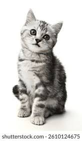
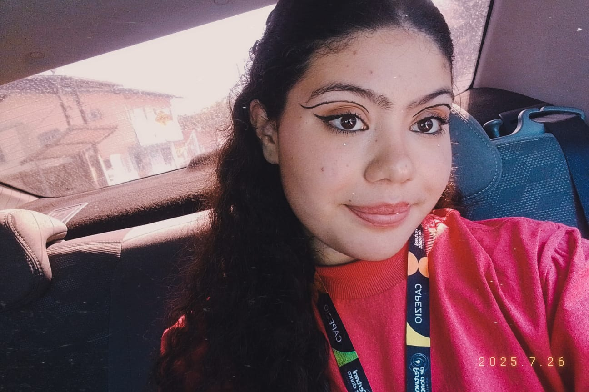
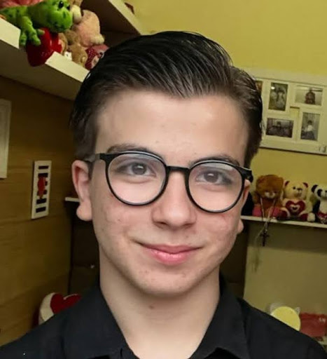

Sobre o Projeto
Conheça mais
sobre o projeto e
sobre quem está
por trás dele!
O Off Web é um projeto desenvolvido por seis alunos do curso técnico integrado de Informática para Internet, no Instituto Federal Catarinense, campus Araquari.
Para o componente curricular Projeto Integrador.
Feito exclusivamente para a SEPE 2025, tudo partiu de uma vontade compartilhada pelo grupo de conscientizar sobre o uso de telas, de uma maneira visual e com linguagem de fácil acesso, explicando os porquês dos malefícios e oferecendo soluções dinâmicas aos usuários. Após muito esforço e pesquisas, o Off Web nasce com seis desenvolvedores.
-
Eduarda Gomes
Responsável por toda a administração das rede sociais do projeto. Criadora da logo e dos conteúdos postados na mídia

-

Ester de Souza Viana
Responsável pela pesquisa, criação e HTML da página Perigos. Encaminhada da criação das atas de reunião.
-
Giulia Marcos Corrêa
Responsável por toda pesquisa envolvendo a página Dados, HTML e CSS da mesma página. Também HTML e CSS das páginas Desconecte-se! e Aplicativos

-

Halicya Gabrielly França Recalde
Responsável pela pesquisa de vídeos, malefícios e notícias. Também pela criação das páginas Início, Malefícios e Desconecte-se! (HTML e CSS em ambas).
-

Laura Luciano Werner
Lider do projeto. Responsável pela pesquisa, criação, HTML e CSS da página A Ciência por Trás do Uso, e pelo layout no Figma.
-

Tiago Martins Perin
Responsável pela pesquisa e página do figma da página Desconecta! , html e css da página Sobre O Projeto e pesquisa da paleta de cores.
O Off Web foi criado com muito esforço e cuidado para que somente informações verídicas e úteis fossem transmitidas. Nós da equipe Off Web esperamos que você possa aproveitar o site, e encontrar o que precisa aqui.